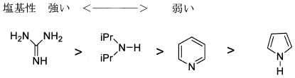
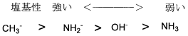
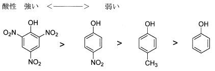
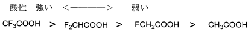
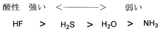

令和5年度 問5 有機化学及び燃料
下記の化学種の酸性、塩基性を比較した次の記述のうち、その強さの順序が誤っているものはどれか。ただし、各項目の性質は左側ほど強く、右側ほど弱いものとする。





酸性の強さはH+の出しやすさ、共役塩基の安定性に影響します。対して塩基性の強さはOH-の出しやすさ、共役酸の安定性に影響します。共役酸や共役塩基の安定性に寄与するのが電気陰性度、置換基の電子供与性・電子求引性、芳香族性などです。
3番は置換基の電子供与性・電子求引性に関する問です。ベースであるフェノールに、電子求引基であるニトロ基（-NO2）もしくは電子供与基であるメチル基（-CH3）がついています。電子求引基の効果で共役塩基であるフェノキシドイオンが安定化されるため酸性が強く、反対に電子供与基の効果で弱くなります。そのためメチル基のついたフェノールの酸性が一番弱くなります。
1番は左からグアニジン、ジイソプロピルアミン、ピリジン、ピロールです。ピロールの非共有電子対は芳香族性（4n+2）に関与しているためピリジンよりも塩基性が劣ります。ジイソプロピルアミンには電子供与基であるイソプロピル基が付いていることからピリジンより塩基性が強くなります。グアニジンはイミン構造（C=N）を持ち、強い電子供与基である2つのアミノ基によりイミンの窒素は非常に電子密度が高くなり塩基性が特に強くなります。
2番はH+の受け取りやすさ（ブレンステッド塩基）に関する問です。原子はC＜N＜Oの順で電気陰性度が大きくなるため塩基として安定化しやすく、H+を受け取りにくくなります。そのため塩基性はCH3-＞NH2-＞OH-となります。NH3はそもそもイオン化しておらず他の物質よりも塩基性が弱くなっています。
4番も同様の考えで、電気陰性度が非常に大きなフッ素原子が置換するほどカルボン酸の水素はδ+側に偏るため（電離後に安定するため）酸性が強くなります。
5番は電気陰性度が高いHF＞H2O＞NH3の順に酸性が強くなりますが、H2Sに関しては原子サイズが大きいため考え方がプラスされます。大きな原子ほど負電荷を広い空間に分散できることから、共役塩基がより安定化します。そのためS原子の電気陰性度が一番小さいものの、酸性はH2Sが2番目に強い結果となります。